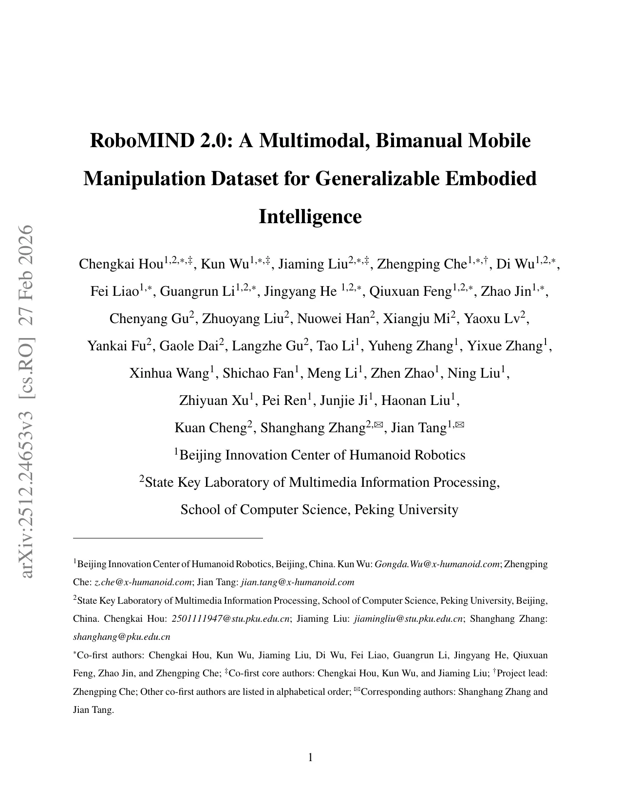
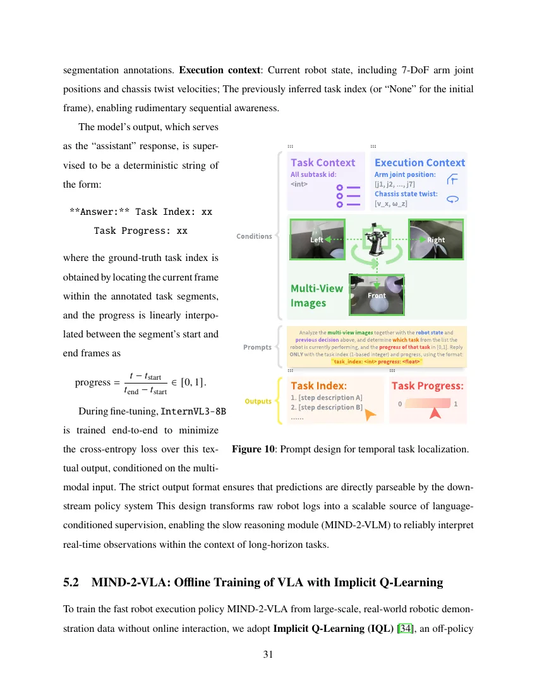
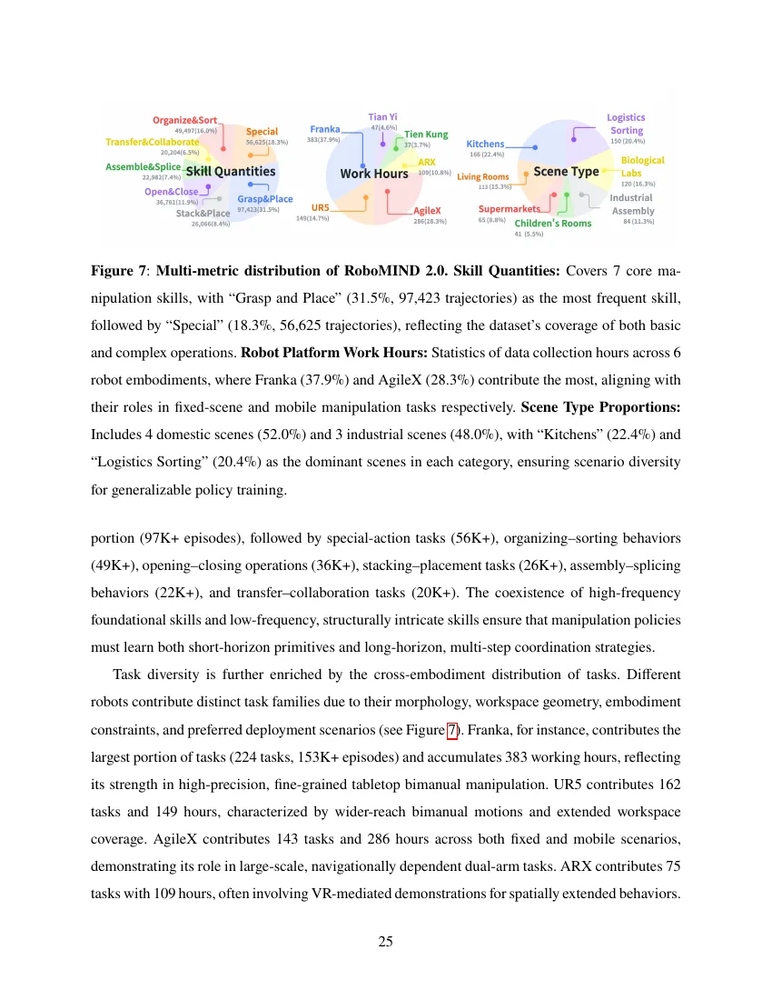
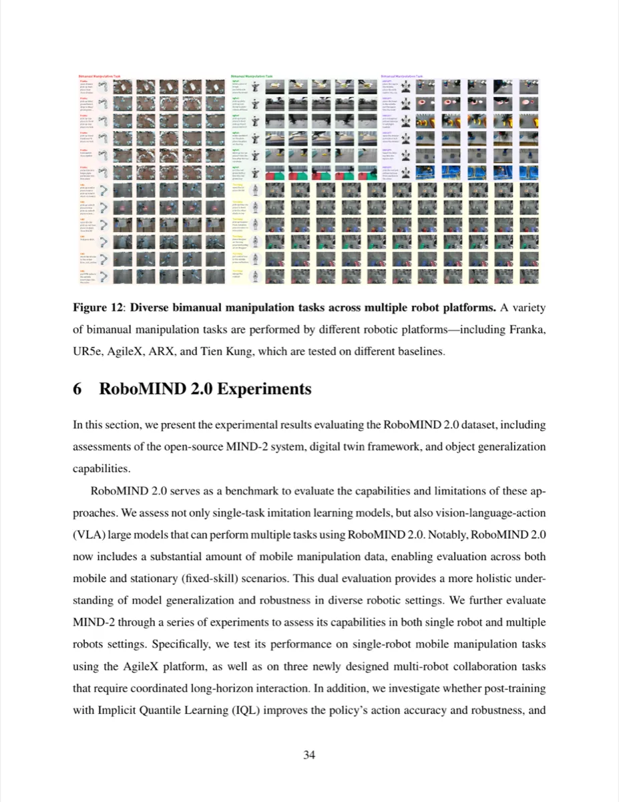

RoboMIND 2.0 是迄今规模最大的开源双臂机器人操作数据集，收录超过 310K 条真实轨迹， 覆盖六种异构机器人本体、759 项复杂任务与 1,139 种操作对象。 配套提出的 MIND-2 层级化双系统框架（慢速 VLM 规划 + 快速 VLA 执行）在长时域移动操作任务上 显著超越现有 imitation learning 与 VLA 基线。
数据驱动的 imitation learning 已深刻改变机器人操作领域，但现有方法受制于大规模、多样化真实演示数据的匮乏， 在长时域双臂任务与陌生环境移动操作中泛化能力依然不足。
"Data-driven imitation learning has revolutionized robotic manipulation, but existing approaches remain limited by the scarcity of large-scale, diverse real-world demonstration data, leading to insufficient generalization in long-horizon bimanual tasks and mobile manipulation in strange environments."
现有代表性数据集存在明显的单一维度局限：BridgeData V2（60K 轨迹，仅 13 项技能）、DROID（76K 轨迹，仅含单臂 Franka）、 Open X-Embodiment（数据聚合，无触觉）。即便是最新的 AgiBot World（1M 轨迹）和 Galaxea Open-World（50K）， 也均依赖单一机器人本体，严重制约跨本体泛化研究。RoboCOIN 虽含 15 种本体，但每种本体的任务覆盖稀疏。 RoboMIND 2.0 是首个同时支持双臂协调、移动操作、灵巧手与高保真触觉传感的开放数据集。

在任务类型上，"Grasp and Place" 占比最高（31.5%，97,423 条轨迹），其次为 "Special"（19.8%）、 "Interactive"（19.3%）；场景覆盖家庭（客厅、厨房、儿童房）与工业（物流分拣、生物实验室、工业装配线） 各约 50%，真正实现了机器人研究所需的多维度多样性。
RoboMIND 2.0 在数据层面构建了统一化的多模态采集与质量保障体系； 在模型层面提出 MIND-2——一个通过 offline reinforcement learning 优化的层级化双系统框架， 将高层语义规划与低层精准动作执行有机结合。
六种双臂平台各有专属遥操作方案：Franka/UR5e 采用平行布局与 master 手臂映射； AgileX/ARX 使用 VR 头显实现全身沉浸式操控；Tien Kung/Tian Yi 人形机器人通过外骨骼捕获精细灵巧手动作。 所有轨迹经过 12 类人工数据检查，涵盖完成度、轨迹异常、过快速度、视觉伪影等， 确保本体感受与视觉观测的高度一致性。
每条轨迹均附有细粒度自然语言描述，支持 language-conditioned policy learning。 标注流程将视频分割为语义子任务片段，通过 VLM 生成初稿后经人工审校， 形成层级化时序指令（全局任务描述 → 子目标序列）， 直接服务于 MIND-2-VLM 的任务分解推理。

MIND-2-VLM 是基于云端部署的"机器人大脑"，能够同时协调不同形态的多台机器人。 它接受自然语言指令，将复杂的长时域任务分解为一系列有序的、具体的子目标（grounded subgoals）， 并实时判断当前任务阶段，输出对应的 Task Index 供快速系统执行。 其设计允许单一 VLM 控制异构双机器人协作（如 Tian Yi + AgileX 联合完成超市结账场景）。
MIND-2-VLA 接收子目标指令、自中心视觉观测与本体感受信息，输出精准、proprioception-aware 的电机动作序列。 训练分为两阶段：首先在全量移动操作数据上进行全规模预训练（fast-slow 架构）， 建立跨任务的通用操作先验；其次在协作任务数据上进行 post-training 微调； 最后施以 Implicit Q-Learning (IQL) offline RL——利用成功与失败轨迹的混合训练， 以 advantage-weighted regression 强化优质行为，显著提升鲁棒性与长时域成功率。
团队开源了所有物理资产的高保真数字孪生（URDF 模型、场景布局、传感器配置）， 并发布 20K 条仿真轨迹（Franka 双臂抓夹 + Tien Kung 双臂灵巧手）， 任务结构、物体配置与语言指令均与真实数据精确对齐， 为低成本、可扩展的 sim-to-real 迁移研究奠定基础。

评测在六种真实机器人本体上进行，涵盖固定基座双臂、移动双臂与人形机器人。 每个任务测试 10 次，以 task success rate 为主要指标。 单任务 imitation learning 基线：ACT、Dense Policy、DP3、UVA； 多任务 VLA 基线：π0、π0.5、HybridVLA、XR-1。

3D 感知方法（DP3、Dense Policy）在双臂协调任务上整体优于 2D 方法（ACT、UVA）， 因其更丰富的空间建模能力能更准确地表示双臂交互的视觉动态。 Dense Policy 在不同机器人本体与任务类型间表现最为一致，适合开放世界多机器人场景； DP3 在结构化、视觉丰富的固定臂环境中表现突出，但在 AgileX-MV 等移动平台上性能下降明显。
| 模型 | AgileX-MV-Task1 | AgileX-MV-Task2 | AgileX-MV-Task3 | AgileX-MV-Task4 |
|---|---|---|---|---|
| π0 | 0.1 | 0.0 | 0.0 | 0.1 |
| π0.5 | 0.3 | 0.0 | 0.3 | 0.1 |
| XR-1 | 0.4 | 0.2 | 0.4 | 0.3 |
| MIND-2 | 0.5 | 0.8 | 0.4 | 0.7 |
π0 因训练以互联网数据为主、缺乏 grounded motor prior，在双臂与移动场景几乎全部失败（近零成功率）。 XR-1 展现出最强的跨本体泛化能力，在固定双臂、移动机械臂与全身人形机器人上均取得较高成功率。 MIND-2 在全部 AgileX 移动操作任务上均超越所有 VLA 基线，最大优势达 +0.6（Task2）。
| 变体 | 超市结账 | 工业分拣 | 化学实验室 |
|---|---|---|---|
| MIND-2（Post Training） | 0.6 | 0.6 | 0.4 |
| MIND-2（Full-scale Training） | 0.8 | 0.7 | 0.4 |
| MIND-2（Offline RL） | 0.9 | 0.8 | 0.6 |
在 Tian Yi + AgileX 协同的三个长时域场景（超市结账、工业开关分拣、化学实验室配液）中， 主流 imitation learning 与 VLA 模型均表现不佳。 MIND-2（Offline RL）——施加 IQL 后训练——在全部三项任务上取得最高成功率（0.9 / 0.8 / 0.6）， 且当成功与失败轨迹 1:1 混合训练时效果最优（三项分别达 1.0 / 1.0 / 0.8）。
在 AgileX 四项移动操作任务上，将触觉信号融入本体感受输入后： π0.5 成功率平均提升约 0.1；XR-1 提升更为显著（如 Task1: 0.4 → 0.6，Task2: 0.2 → 0.4）。 结论为："incorporating tactile information consistently improves the success rates across multiple mobile manipulation tasks, with particularly pronounced gains in scenarios requiring fine manipulation or physical interaction"。
在 Tien Kung 仿真任务中，XR-1 在四项任务上分别达 48/50、39/50、46/50、31/50， 验证了仿真数据的高保真度。混合真实与仿真数据训练时，所有模型均受益； 进一步将仿真数据比例从 1:1 提升至 1:5 仍可改善真实机器人性能， XR-1 在 Task3 上从 0.8 提升至 0.9，Task4 从 0.5 提升至 0.7。
当前触觉数据仅源自特定型号的压力传感器，未涵盖力矩传感器、音频等其他物理交互信号。 论文明确指出将在后续工作中扩展更多模态（"e.g., force-torque and audio"）。
尽管已覆盖六种双臂平台，但论文明确表示会"continue expanding RoboMIND 2.0 with new embodiments, skills, and modalities"。 部分稀有本体（如 ARX、Tien Kung）的任务数量相对有限，可能制约跨本体泛化研究的深度（inferred）。
MIND-2（Post Training）直接微调现有 VLA 模型（InternVL3 + π0.5）在协作任务上成功率偏低（0.6/0.6/0.4）， 而 Full-scale Training 版本需要在全量移动操作数据上预训练，计算成本显著更高。 对于计算资源受限的研究者，低成本快速部署能力仍存在挑战（inferred）。
即便是 MIND-2（Offline RL）在最复杂的化学实验室协作任务中成功率仅为 0.6， 说明长序列、强时序依赖的多机器人任务仍是当前方法的重要瓶颈（inferred from Table 4 results）。